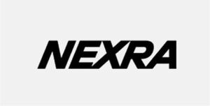

Trade Mark Journal No.2026/008 20 February 2026
WO0000001900198 (12,37,39,42)
Office of origin: European Union Intellectual Property Office (EUIPO)
Date of International Registration:22 October 2025
Date of designation in the UK:
22 October 2025

The mark contains the colours light grey and black.
International priority date claimed: 16 June 2025
(European Union Intellectual Property Office (EUIPO))
(019202755)
- Class 12
- Vehicles; apparatus for locomotion by water; barges; boats; marine vehicles; marine craft; marine vehicles incorporating lifting platforms; ships; water vehicles; parts and fittings in relation to the aforementioned.
- Class 37
- Building, construction and demolition; offshore construction; construction of offshore foundations, structures and platforms; construction of offshore wind farms; construction of offshore wind installations; subsea construction for the offshore industry; inspection of subsea facilities and installations prior to repair; repair of subsea facilities and installations in the offshore industry; installation services in relation to offshore foundations, structures and platforms; installation services in relation to offshore wind installations; maintenance services in relation to offshore foundations, structures and platforms; maintenance services in relation to offshore wind installations; decommissioning, namely, dismantling and removal (not transport), of offshore structures and platforms; decommissioning, namely, dismantling and removal (not transport), of offshore wind installations; construction project management services; on site project management relating to the construction of offshore wind projects; marine lifting services; offshore lifting services; rental of tools and equipment for construction, demolition and maintenance; installation of offshore wind turbine generators and foundations; maintenance of offshore wind turbine generators; maintenance of offshore structures and platforms; consultancy in relation to the aforementioned.
- Class 39
- Transport services; shipping services; freight and cargo services; transport of offshore foundations, offshore wind installations and offshore structures and platforms; rescue, recovery, towing and salvage services; rental of means of transportation; chartering of marine vessels; transport of offshore wind turbine generators and foundations; consultancy in relation to the aforementioned.
- Class 42
- Science and technology services; technological engineering analysis; development of construction projects (construction planning); development of offshore wind projects; engineering services; technical supervision and inspection of offshore installations; engineering project management services; technical planning and technical project management for the development offshore wind projects; consultancy in relation to the aforementioned.
Cadeler A/S
Representative: GORRISSEN FEDERSPIEL ADVOKATPARTNERSELSKAB, Axeltorv 2, DK-1609 Copenhagen V, DENMARK